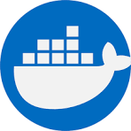

Step-by-Step Roadmap
This section outlines the key steps and skills you need to acquire in a logical order, from foundational knowledge to advanced topics.
Phase 1: The Fundamentals
Step 1: Programming & Scripting
Learn a language for automation.
Step 2: Operating Systems & Linux
Master the command line and OS concepts.
Step 3: Version Control
Learn how to manage code.
Phase 2: Infrastructure & Automation
Step 4: Infrastructure as Code (IaC)
Automate your infrastructure.
Step 5: Cloud Providers
Choose a cloud platform to host your infrastructure.
Phase 3: Application Delivery
Step 6: Containerization
Package your applications.
 Docker
Step 7: CI/CD
Automate the build and deployment process.
Step 8: Container Orchestration
Manage containers at scale.
Phase 4: Observability & Reliability
Step 9: Monitoring & Logging
Understand how your applications are performing.
Step 10: Security (DevSecOps)
Integrate security into your pipeline.
SAST
DAST
Secrets Management